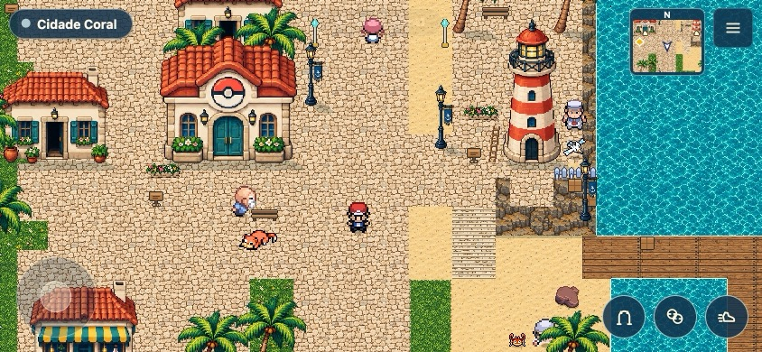
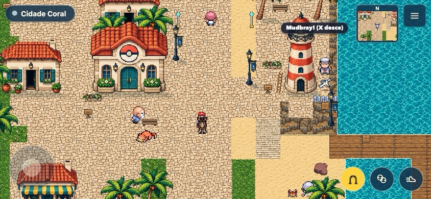
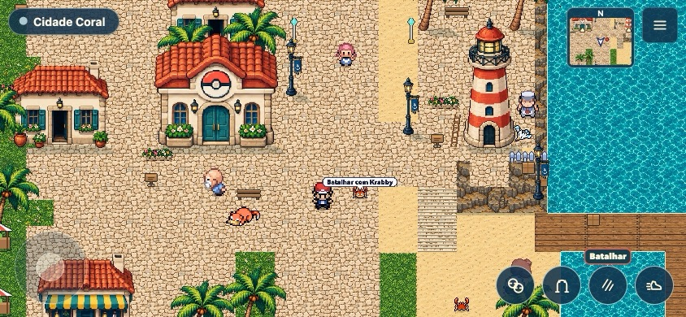
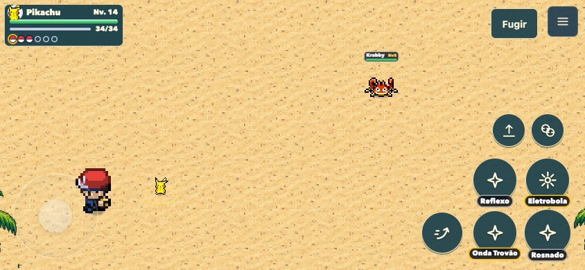
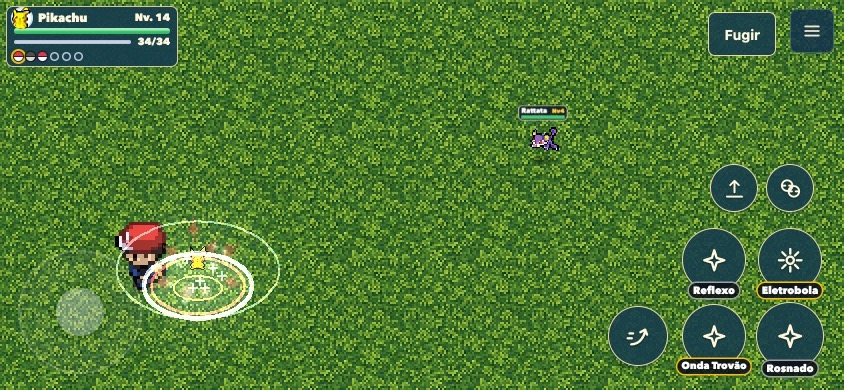
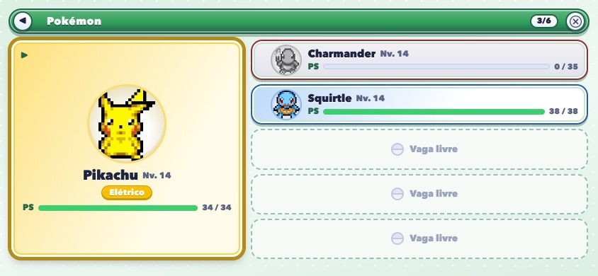
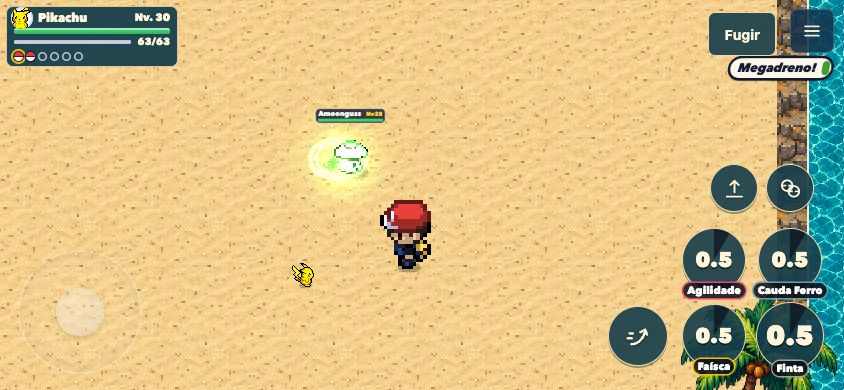
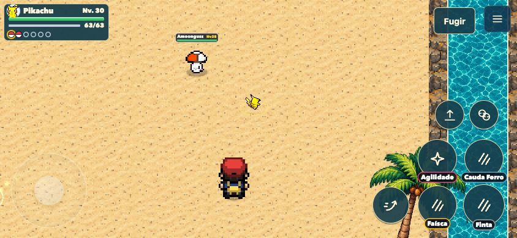
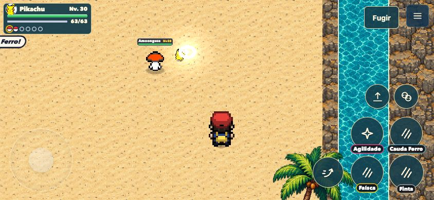

Revisão de jogabilidade
Capturas reais em 844×390. Explore com o treinador; perto de um selvagem, toque em Batalhar. O Pokémon sai dentro da arena e volta à Poké Bola ao terminar. Montaria e equipe continuam acessíveis.
Abrir o jogo local em Coral · Relatório e medições
Testes funcionais e equilíbrio passaram. Desempenho ainda tem regressão no pico de memória da caminhada e no quadro da praça; falta validação no iPhone. Esta rodada não foi publicada.

Exploração: equipe, montaria e corrida
Montaria com atalho próprio
Batalhar diretamente, sem envio prévio
Arena: adversário e PS legíveis
Arena conforme a região
Equipe no celular
Luta em andamento 1
Luta em andamento 2
Luta em andamento 3